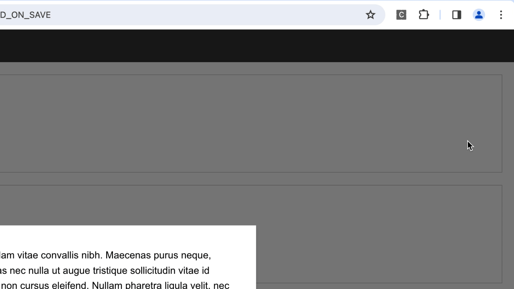

CookieAudit checks the cookie notices and cookie usage of websites for EU compliance.
How it works
On a high level, CookieAudit does the following:
Cookie notice analysis: checking if the cookie notice mentions the purpose of the cookies, forces the
user to
interact with it, has a different design for Accept/Reject buttons.
Notice and page interaction: clicking on a button (e.g., Reject) and then scrolling through the website.
Cookie analysis: after the page interaction, checking the new cookies for advertising/analytics purposes.
Report: presenting the information in a report.
How To
Make sure only one tab and only one window of your browser is open.
Inside the popup, Reset and initialize all CookieAudit data.

Always reset first.
Inside the popup, click on Start.
Select the cookie notice. If this is not possible, select some element inside the notice.
Selecting the cookie notice.Sometimes, only a partial selection is possible.
Wait while the browser analyzes the cookie notice.
On some websites: Select the second level notice that contains the cookie settings.
Wait while the browser interacts with the notice and website.
Once finished, download the reports: available as PDF or JSON.
Restrictions
CookieAudit doesn't handle cookie notices that open a new website/tab for the cookie settings
CookieAudit uses AI models to classify cookies, the role of buttons and the meaning of the cookie notice text.
It may misclassify any of those.
Permissions Explained
Storage and Unlimited Storage: The PDF report is temporarily stored in local storage. In extreme cases it may
exceed the 5MB limit imposed by Google Chrome. Cookies: CookieAudit needs to analyze all cookies set by the website. Active Tab: CookieAudit needs the url of the current tab to write it into the report. Scripting: CookieAudit executes scripts that, e.g., interact with the current webpage, via the scripting API.
Web navigation: CookieAudit reads the number iframes on a webpage (via the webNavigation API) to determine if
the page is still loading.